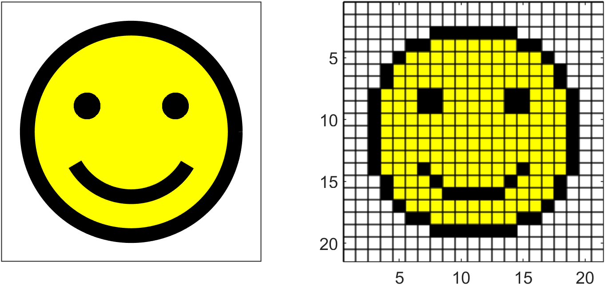
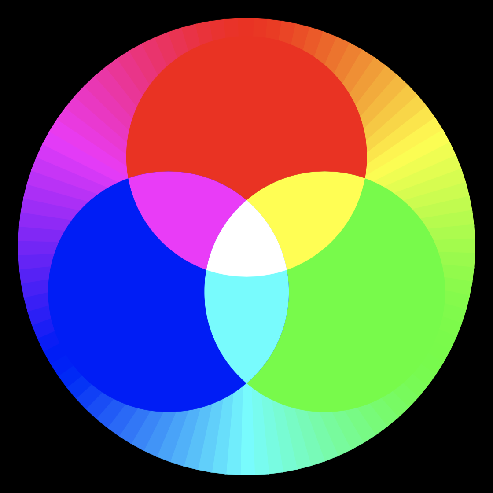
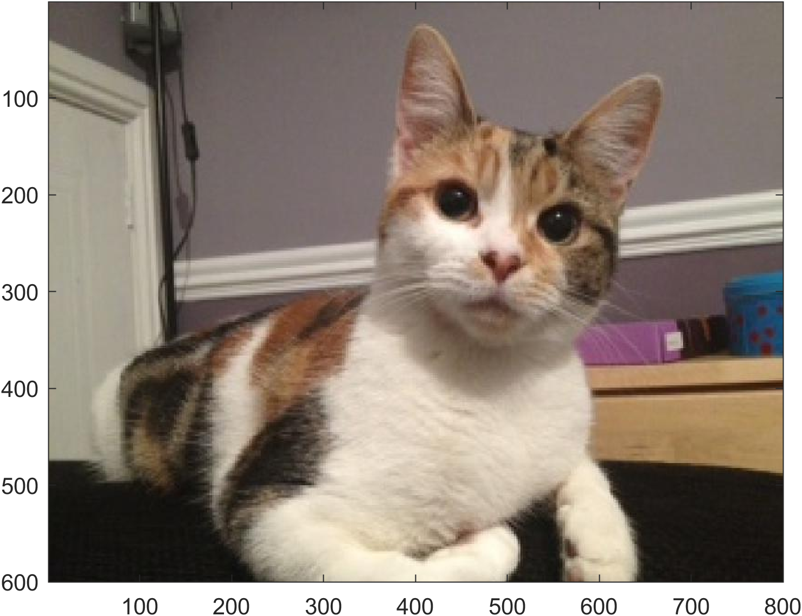
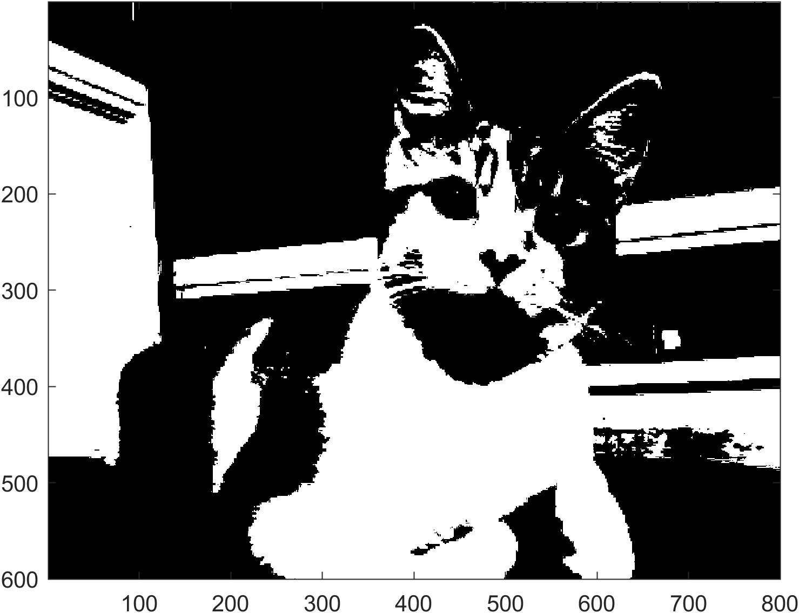

Rasterisation
Contents
Rasterisation#
Computer displays use an array of small squares called pixels which are illuminated using different colours. When the array of pixels is viewed as a whole the brain interprets it as a single image. The pixel array is called a raster array and the process of determining the illumination of the pixels is called rasterisation. The image that is approximated as a raster array is known as the idealised image.
{kind=link}

Fig. 49 The idealised image and the raster approximation.#
Definition 19 (Pixel)
A pixel is a small square that is illuminated using different colours.
Definition 20 (Raster)
A raster is a rectangular array of pixels.
Definition 21 (Idealised image)
An idealised image is an analogue image that we wish to represent in a raster.
The RGB colour model#
The RGB colour model uses the three primary colours Red, Green and Blue (RGB) that are added to produce colours in the visible spectrum. Using a single bit for each primary colour (i.e., adding all of that colour or none of that colour) means that it is possible to produce eight colours: red, yellow, green, cyan, blue, magenta, black and white as shown in 1-bit RGB codes. For example mixing full amounts of red and green results in pure yellow.
24-bit colour#
Adding proportions of each primary colours means that many more colours can be produced. Using 8 bits for each primary colour means that there are a possible \(2^8 = 256\) different quantities of that colour. Combining the three primary colours means that the number of colours that can be produced is \(3 \times 2^8 = 16,772,216\). It is estimated that the most number of colours that the human eye can distinguish is approximately 10 million so 24 bit colour (known as true color) is considered sufficient.
{kind=link}

Fig. 50 RGB color wheel#
Since there are 256 levels of the three primary colours in the true color model we can use the integers 0 to 255 in an ordered triplet. For example, the colour cyan is made by mixing full amounts of green and blue which corresponds to the triplet [0, 255, 255]. Most software packages also accept hexadecimal (base-16) colour codes where the values in the triplet are represented using 2-digit hexadecimal numbers 00 to FF which follow a # symbol. For example, cyan is represented using "#00FFFF".
Colour |
RGB triplet |
Hexadecimal colour code |
|---|---|---|
Black |
|
|
Red |
|
|
Yellow |
|
|
Green |
|
|
Cyan |
|
|
Blue |
|
|
Magenta |
|
|
White |
|
|
Raster arrays#
The information that defines a raster can be stored in a raster array. If a raster has a width of \(N_x\) pixels and a height of \(N_y\) pixels then it can be defined as an \(N_y \times N_x \times 3\) array. The colour of each of the pixels in the raster is defined by the 3 levels for the red, green and blue components.
The MATLAB command for reading in an image file is imread(<filename>). For example, the following code reads in the image file cavendish.png which is a photograph of my cat Cavendish and prints the size of the raster array.
img = imread('cavendish.jpg');
[Ny, Nx, Ncolours] = size(img)
The output is
Ny = 600
Nx = 800
Ncolours = 3
So the raster array has a height of \(N_y = 600\) pixels, a width of \(N_x=800\) pixels with each pixel defined by a colour triplet.
The MATLAB command for displaying a raster array img is image(img)
image(img)
{kind=link}

Now we have the raster array for the image we can use Python commands to manipulate the image. For example, the following code sets the colour of each pixel to either black or white depending on whether the average of the colour triplet is greater or less than 128 which is halfway between 0 and 255.
% Read in image
img = imread('cavendish.jpg');
% Get size of image array
[Ny, Nx, Ncolours] = size(img);
% Reshape image array
img_bw = reshape(img, [Nx * Ny, Ncolours]);
% Calculate average colour of each pixel
avg = mean(img_bw, 2);
% Change each pixel to black or white depending on the average colour
img_bw(avg <= 128, :) = 0;
img_bw(avg > 128, :) = 255;
% Reshape image array back to the original shape
img_bw = reshape(img_bw, [Ny, Nx, Ncolours]);
% Plot image array
image(img_bw)
{kind=link}

Pixel co-ordinates#
You may have noticed that the vertical axes on the image plots have a scale that starts at 1 at the top and increases as we move down the rows of pixels 1. The reason for this is that digital displays are refreshed using horizontal lines of pixels starting at the top row and moving down to the bottom.
If the raster represents a region defined by the \(x\) and \(y\) Euclidean space co-ordinates \(x, y \in [0, 1]\) which is to be represented by an \(N_y \times N_x\) raster then the corresponding pixel co-ordinates are
where \(\lfloor \cdot \rfloor\) is rounds the contents to the integer below. Note that the \(y\) co-ordinate is subtracted from 1 to ensure that the pixel co-ordinates \((0, 0)\) correspond to \((0, 1)\), i.e., the top-left hand pixel in the raster.
- 1
Note that in most graphical applications we start numbering pixels at 0. In these notes have have used 1 as the starting co-ordinate so that matrix indexing is easier when using MATLAB. If you are using a zero-indexing language such as Python, C etc. then subtract 1 from the pixel co-ordinates.